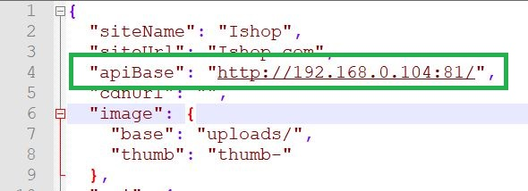
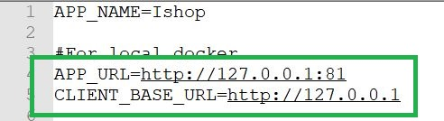

How to run VPS project locally?
If you don't want to run the VPS project locally, you can skip this section.
Installing Docker and Docker Compose in Windows
Here are the steps to install Docker on Windows:
- Download the Docker Desktop for Windows installer from the Docker website.
- Double-click the downloaded file to start the installation process.
- Click "Yes" when prompted by the User Account Control dialog to allow the installer to make changes to your system.
- Follow the instructions on the screen to complete the installation process. The installer will install Docker Desktop on your system and set it up to run as a Windows service.
- Once the installation is complete, click the "Finish" button to close the installer.
- Open the Start menu and search for "Docker Desktop". Click on the Docker Desktop application to launch it.
- Once Docker Desktop is running, you can use the Docker CLI to interact with your containers. You can also use the Docker Desktop Dashboard to manage your containers and images.
- Docker Desktop for Windows includes Docker Compose as part of the installation, so you don't have to install it separately.
- To verify that Docker Compose is installed and available, you can open a Command Prompt or PowerShell window and run the following command:
docker-compose --version
Note: Your system must meet the minimum hardware and software requirements to run Docker Desktop, including Windows 10 64-bit Pro, Enterprise, or Education, version 2004 or later.
Installing Docker and Docker Compose in macOS
Here are the steps to install Docker Desktop for macOS:
- Download Docker Desktop for macOS from the Docker website.
- Double-click the downloaded file to start the installation process.
- Follow the instructions in the installation wizard to complete the installation.
- Once the installation is complete, open the Docker application from the Applications folder or from Launchpad.
- Wait for the Docker icon to appear in the status bar.
- Click the Docker icon in the status bar to open the Docker application.
- Verify that Docker is installed and running by running the following command in a Terminal window:
- Now you can use Docker to manage containers and images on your macOS system. Note that Docker Compose is included with the Docker Desktop for macOS installation, so you do not need to install it separately.
docker-compose --version
Installing Docker and Docker Compose in Linux
Here are the steps to install Docker and Docker Compose on a Linux distribution such as Ubuntu:
- Install Docker:
- Start the Docker service:
- Verify that Docker is installed and running by running the following command:
- Install Docker Compose:
- Verify that Docker Compose is installed and available by running the following command:
- Now you can use Docker to manage containers and images, and use Docker Compose to manage multi-container Docker applications on your Linux distribution.
sudo apt-get updatesudo apt-get install docker.io
sudo systemctl start docker
docker run hello-world
sudo curl -L
"https://github.com/docker/compose/releases/download/1.26.2/docker-compose-$(uname
-s)-$(uname -m)" -o /usr/local/bin/docker-compose
sudo chmod +x /usr/local/bin/docker-compose
docker-compose --version
IP address in Windows
You wii be needing the IP Address of your PC to configure the project.
You can get the IP address of your Windows system using the following steps:
- Click the Windows Start button and type "cmd" in the search box.
- Right-click the Command Prompt icon and select "Run as administrator".
- In the Command Prompt window, type the following command and press Enter:
- The output will show the IP addresses assigned to your system. You may see multiple lines if your system has multiple network interfaces. The IP address listed under the "IPv4 Address" or "IP Address" header is the IP address for the interface.
- If you are using a Wi-Fi connection, you may also find the IP address listed as the "Default Gateway" under the "Wireless LAN adapter Wi-Fi" section.
ipconfig
IP address in macOS
You can get the IP address of your macOS system using the following steps:
- Open the Terminal application (you can find it in the Utilities folder within the Applications folder).
- Type the following command and press Enter:
- The output will show the IP addresses assigned to your system. You may see multiple lines if your system has multiple network interfaces. The IP address listed under the "inet" header is the IP address for the interface.
- Note: The above command will only work for macOS systems running macOS Mojave (10.14) or earlier. If you are running a later version of macOS, you can use the following command instead:
- Replace "en0" with the name of the network interface you want to get the IP address for.
ifconfig | grep "inet " | grep -v 127.0.0.1
ipconfig getifaddr en0
IP address in Linux
You can get the IP address of your Linux system using the following steps:
- Open a Terminal window.
- Type the following command and press Enter:
- The output will show the IP addresses assigned to your system. You may see multiple lines if your system has multiple network interfaces. The IP address listed under the "inet" header is the IP address for the interface.
- Note: If the "ifconfig" command is not available on your system, you can try using the "ip" command instead:
- This will show the IP addresses assigned to your system, along with other information about your network interfaces. The IP address is listed under the "inet" header.
ifconfig
ip addr show
Project Configuration
- Navigate to the root directory of VPS-project folder.
- Go to frontend folder
- Open config.json file in a text editor.
- Change the value of apiBase. Put here the IP Address with Port: 81. eg. http://192.168.0.104:81/ 
- Now Navigate to the root directory of VPS-project folder.
- Go to backend folder
- Open .env file in a text editor.
- Change the value of APP_URL to http://127.0.0.1:81
- Also, Change the value of CLIENT_BASE_URL to http://127.0.0.1 
Run the Project
- Navigate to the root directory of VPS-project folder using the terminal.
- Make sure docker compose is running by running the following command:
- Run the following command to build the docker container:
- Run the following command to start docker container:
- Now its time to run the database migrations in the backend. Please Run the following command to start to go to the app image:
- Please Clear the cache by running these commands:
- Run the migration by running these commands:
- Please Clear the cache one last time by running the commands above (Step: 6).
- Now, Exit from the image by running:
- Now, run the following command to stop the docker container:
- Run the following command to start docker container:
- You can access the website from the IP address in the browser now. eg. http://192.168.0.104
- You can access the admin panel from the IP address with Port: 81. eg. http://192.168.0.104:81/
- Use these credentials below to login to the admin panel
- Admin email: admin@mail.com
- Admin password: 123456
docker-compose --version
docker-compose build --no-cache
docker-compose up -d
docker-compose exec app bash
php artisan route:cachephp artisan route:clearphp artisan config:cachephp artisan config:clearphp artisan cache:clearphp artisan optimize
php artisan migrate:fresh --seedphp artisan passport:install
exit
docker-compose down
docker-compose up -d
We've attached a video here. You can check that out.